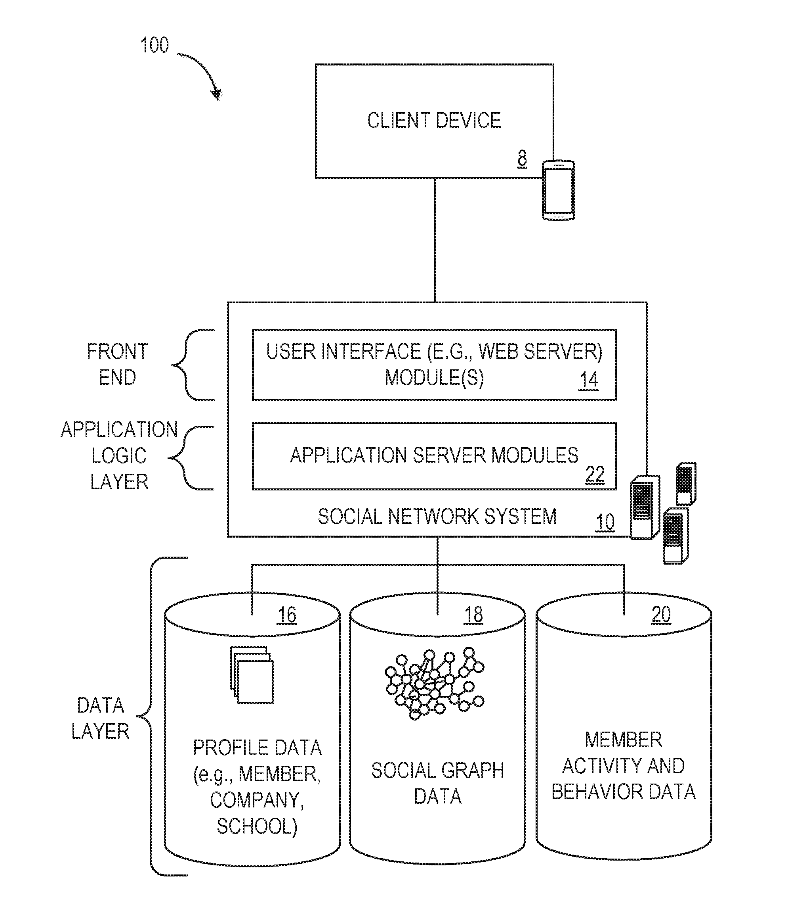
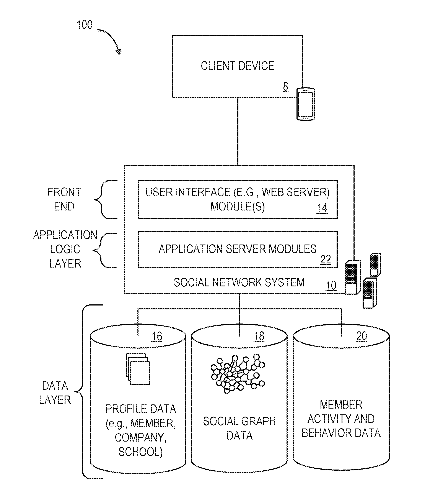

Companies have secured thousands of patents for technologies that track and analyse how people behave online. These systems collect data from clicks, scrolls, movements, and other interactions, turning them into information that can be used to target content and advertising. Over time, these patented approaches have created a largely unseen framework that influences what information we see and how digital platforms respond to us. Below are a few of these patented technologies. Click on any of them to explore how they work.

 
